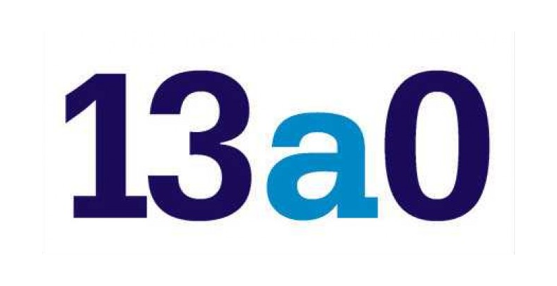

<!doctype html>
<html lang="es">
<head>
<meta charset="utf-8">
<title>Partido en vivo 13a0</title>
<link rel="preconnect" href="https://fonts.googleapis.com">
<link href="https://fonts.googleapis.com/css2?family=Archivo:wght@500..900&family=Bitter:wght@700;800&display=swap" rel="stylesheet">
<style>
  /* Pantalla de partido en vivo para OBS — 1920 x 1080, fondo transparente afuera del marco.
     Se arma sola según la competencia del partido:
       · Uruguay (Primera): partido + panel que rota (resultados de la fecha, tabla del torneo,
         anual y promedios, todas EN VIVO: suman el resultado parcial).
       · Copa AUF: solo el partido, más grande (los datos salen de la pestaña "partido_vivo").
       · Libertadores / Sudamericana: partido + global de la serie + panel con las llaves
         (o resultados) de las dos copas y, en fase de grupos, la tabla del grupo.
     Datos: ESPN (en vivo) y la pestaña "partido_vivo" de la planilla (qué partido mostrar,
     carga a mano y correcciones). Abajo quedan libres los 70 px de la cinta del ticker. */
  :root { --negro:#000; --blanco:#fff; --azul:#180B5B; --celeste:#0086C3; --amarillo:#F9BE02; --rojo:#C5021E; --gris:#6E6A86; --linea:#e9e7f0;
          --grotesca:"Archivo","Helvetica Neue",Arial,sans-serif; --slab:"Bitter",Georgia,serif; }
  * { box-sizing:border-box; margin:0; padding:0; }
  html, body { width:100%; height:100%; overflow:hidden; background:transparent; }
  .pant { position:absolute; left:0; top:0; width:1920px; height:1080px; transform-origin:0 0; font-family:var(--grotesca); color:var(--azul); -webkit-font-smoothing:antialiased; }
  .negro { position:absolute; left:0; top:0; width:1920px; height:1010px; background:var(--negro); }
  .b { position:absolute; } .ro{background:var(--rojo)} .am{background:var(--amarillo)} .ce{background:var(--celeste)} .az{background:var(--azul)} .bl{background:var(--blanco)}

  /* cinta de arriba */
  .vivo { position:absolute; display:flex; align-items:center; gap:14px; padding:0 22px; color:#fff; font:800 36px/1 var(--slab); letter-spacing:.06em; text-transform:uppercase; white-space:nowrap; }
  .vivo i { width:22px; height:22px; background:#fff; animation:titila 1.6s steps(2, start) infinite; }
  @keyframes titila { 50% { opacity:.15; } }
  .torneo { position:absolute; display:flex; align-items:center; padding:0 28px; font:800 32px/1 var(--grotesca); white-space:nowrap; overflow:hidden; }
  .torneo span { color:var(--gris); font-weight:600; margin-left:14px; }
  .logo { position:absolute; background:var(--blanco); display:flex; align-items:center; justify-content:center; overflow:hidden; padding:10px 18px; }
  .logo img { max-width:100%; max-height:100%; object-fit:contain; }
  .logo .barras { position:absolute; inset:0; pointer-events:none; }
  .logo .barras i { position:absolute; left:0; width:100%; height:34%; transform:translateX(-102%); }
  .logo .barras i:nth-child(1) { top:0; background:var(--rojo); } .logo .barras i:nth-child(2) { top:33%; background:var(--amarillo); } .logo .barras i:nth-child(3) { top:66%; background:var(--celeste); }
  .logo.anim .barras i { animation:barrer 1.5s cubic-bezier(.75,0,.2,1) both; }
  .logo.anim .barras i:nth-child(2) { animation-delay:.1s; } .logo.anim .barras i:nth-child(3) { animation-delay:.2s; }
  @keyframes barrer { 0% { transform:translateX(-102%); } 42%,58% { transform:translateX(0); } 100% { transform:translateX(102%); } }

  /* el partido */
  .estadio { position:absolute; display:flex; align-items:center; justify-content:space-between; gap:20px; padding:0 28px; color:#fff; font:800 28px/1 var(--grotesca); letter-spacing:.08em; text-transform:uppercase; white-space:nowrap; }
  .estadio span:first-child { overflow:hidden; text-overflow:ellipsis; }
  .marcador { position:absolute; background:var(--blanco); display:grid; grid-template-columns:1fr auto 1fr; align-items:center; padding:0 40px; }
  .eq { display:flex; flex-direction:column; align-items:center; gap:18px; min-width:0; }
  .eq img { width:190px; height:190px; object-fit:contain; }
  .eq b { font:900 40px/1.05 var(--grotesca); letter-spacing:-.02em; text-align:center; }
  .res { display:flex; flex-direction:column; align-items:center; gap:14px; padding:0 20px; }
  .res .min { background:var(--amarillo); font:900 46px/1 var(--grotesca); padding:14px 28px; white-space:nowrap; }
  .res .min.fin { background:var(--azul); color:#fff; }
  .res .goles { display:flex; align-items:center; gap:22px; font:900 180px/1 var(--grotesca); letter-spacing:-.04em; }
  .res .goles i { width:46px; height:16px; background:var(--azul); }
  .res .goles.previa { font-size:90px; }
  .res .serie { background:var(--azul); color:#fff; font:800 26px/1 var(--grotesca); padding:10px 16px; white-space:nowrap; }
  .res .pen { background:var(--celeste); color:#fff; font:800 24px/1 var(--grotesca); padding:8px 14px; }
  .marcador.ancho .eq img { width:240px; height:240px; } .marcador.ancho .eq b { font-size:52px; } .marcador.ancho .res .goles { font-size:220px; }
  .incid { position:absolute; background:var(--azul); color:#fff; display:grid; grid-template-columns:1fr 1fr; gap:0 40px; padding:24px 40px; overflow:hidden; }
  .incid ul { list-style:none; display:flex; flex-direction:column; gap:12px; min-width:0; }
  .incid ul.der { align-items:flex-end; }
  .incid li { display:flex; align-items:center; gap:14px; font:700 28px/1 var(--grotesca); white-space:nowrap; }
  .incid li .t { font-weight:900; min-width:64px; } .incid ul.der li .t { text-align:right; }
  .incid li .tag { font:900 19px/1 var(--grotesca); letter-spacing:.1em; padding:8px 10px; }
  .incid li .gol { background:var(--amarillo); color:var(--azul); } .incid li .roja { background:var(--rojo); color:#fff; }
  .incid.chico li { font-size:23px; gap:10px; } .incid.chico { gap:0 24px; }

  /* panel que rota */
  .panel-cab { position:absolute; display:flex; align-items:center; justify-content:space-between; padding:0 24px; color:#fff; font:800 28px/1 var(--slab); letter-spacing:.05em; text-transform:uppercase; white-space:nowrap; }
  .panel-cab .pts { display:flex; gap:8px; } .panel-cab .pts i { width:14px; height:14px; border:3px solid #fff; } .panel-cab .pts i.on { background:#fff; }
  .panel { position:absolute; background:var(--blanco); padding:12px 20px; overflow:hidden; }
  .panel .hoja { position:absolute; inset:12px 20px; display:flex; flex-direction:column; transition:transform .7s cubic-bezier(.75,0,.2,1); }
  .panel .hoja.entra { transform:translateX(110%); } .panel .hoja.sale { transform:translateX(-110%); }
  .panel h3 { font:800 20px/1 var(--grotesca); letter-spacing:.14em; text-transform:uppercase; color:#fff; background:var(--azul); align-self:flex-start; padding:8px 12px; margin:4px 0 6px; }
  .fila { display:grid; grid-template-columns:36px 1fr auto 1fr 36px; align-items:center; gap:10px; height:58px; border-bottom:3px solid var(--linea); font:800 23px/1.05 var(--grotesca); }
  .fila img { width:36px; height:36px; object-fit:contain; }
  .fila .n1 { text-align:right; } .fila .sc { background:var(--azul); color:#fff; padding:8px 12px; font-weight:900; min-width:84px; text-align:center; white-space:nowrap; }
  .fila .sc.hora { background:var(--celeste); font-size:20px; } .fila .sc.vivo-sc { background:var(--rojo); }
  .tabla { width:100%; border-collapse:collapse; font:700 23px/1 var(--grotesca); }
  .tabla th { font:800 17px/1 var(--grotesca); letter-spacing:.12em; color:var(--gris); text-align:right; padding:4px 8px 10px; }
  .tabla th:nth-child(2) { text-align:left; }
  .tabla td { height:40px; padding:0 8px; text-align:right; border-bottom:2px solid #eeecf3; white-space:nowrap; }
  .tabla td:nth-child(2) { text-align:left; max-width:340px; overflow:hidden; text-overflow:ellipsis; } .tabla td img { width:28px; height:28px; object-fit:contain; vertical-align:middle; margin-right:12px; }
  .tabla td.pos { width:52px; text-align:center; color:#fff; background:var(--celeste); font-weight:900; }
  .tabla tr.lider td.pos { background:var(--amarillo); color:var(--azul); } .tabla tr.baja td.pos { background:var(--rojo); }
  .tabla td.p { font-weight:900; color:var(--azul); }
  /* tabla en vivo: cuadradito rojo = está jugando ahora; flecha = sube o baja con el parcial */
  .tabla .punto { display:inline-block; width:12px; height:12px; background:var(--rojo); margin-left:10px; vertical-align:middle; }
  .tabla .flecha { font-size:16px; margin-left:8px; vertical-align:middle; } .tabla .flecha.sube { color:#1a9a4a; } .tabla .flecha.baja { color:var(--rojo); }
  .llave { display:grid; grid-template-columns:1fr auto 1fr; align-items:center; gap:10px; padding:14px 0 10px; border-bottom:3px solid var(--linea); }
  .ll-eq { display:flex; align-items:center; gap:10px; font:800 23px/1.1 var(--grotesca); min-width:0; } .ll-eq.der { justify-content:flex-end; text-align:right; }
  .ll-eq img { width:40px; height:40px; object-fit:contain; flex:none; }
  .ll-sc { display:flex; flex-direction:column; gap:6px; align-items:center; } .ll-sc span { background:var(--azul); color:#fff; font:800 20px/1 var(--grotesca); padding:7px 12px; min-width:130px; text-align:center; white-space:nowrap; }
  .ll-sc span.hora { background:var(--celeste); } .ll-sc span.vivo-sc { background:var(--rojo); }
  .ll-nota { grid-column:1 / -1; text-align:center; font:700 18px/1 var(--grotesca); color:var(--gris); letter-spacing:.04em; }
  .vacio { margin:auto; font:800 30px/1.3 var(--slab); color:var(--gris); text-align:center; }

  /* WhatsApp y redes, abajo */
  .redes { position:absolute; background:var(--azul); color:#fff; display:flex; align-items:center; justify-content:center; padding:0 22px; overflow:hidden; }
  .redes .lst { display:flex; gap:44px; white-space:nowrap; }
  .redes .v { display:inline-flex; align-items:center; gap:8px; }
  .redes .v b { margin-left:6px; font-weight:800; font-size:28px; color:#fff; }
  .ico { flex:none; display:inline-flex; align-items:center; justify-content:center; width:40px; height:40px; color:#fff; }
  .ico svg { width:28px; height:28px; }
  .ico.ce { background:var(--celeste); } .ico.ro { background:var(--rojo); } .ico.am { background:var(--amarillo); color:var(--azul); } .ico.ne { background:var(--negro); }
  .espera { position:absolute; display:flex; flex-direction:column; align-items:center; justify-content:center; gap:20px; background:var(--blanco); text-align:center; }
  .espera b { font:900 64px/1 var(--grotesca); letter-spacing:-.02em; } .espera span { font:700 30px/1.3 var(--grotesca); color:var(--gris); }
</style>
</head>
<body>
<svg width="0" height="0" style="position:absolute" aria-hidden="true">
  <symbol id="i-wa" viewBox="0 0 24 24"><circle cx="12.4" cy="11.4" r="8.2" fill="none" stroke="currentColor" stroke-width="2.4"/><path d="M3.6 21.4 5.2 15.9 8.9 19.4Z" fill="currentColor"/><path d="M9.2 7.6c-.6.2-1 .9-1 1.6 0 3.3 3.3 6.6 6.6 6.6.7 0 1.4-.4 1.6-1l.2-1.1-2.3-1.1-1 1.1c-1.5-.6-2.6-1.7-3.2-3.2l1.1-1-1.1-2.3Z" fill="currentColor"/></symbol>
  <symbol id="i-ig" viewBox="0 0 24 24"><rect x="3.2" y="3.2" width="17.6" height="17.6" rx="5" fill="none" stroke="currentColor" stroke-width="2.4"/><circle cx="12" cy="12" r="4.1" fill="none" stroke="currentColor" stroke-width="2.4"/><circle cx="17.2" cy="6.8" r="1.5" fill="currentColor"/></symbol>
  <symbol id="i-x" viewBox="0 0 24 24"><path d="M3.8 3.8h4.8l11.6 16.4h-4.8Z" fill="currentColor"/><path d="M19.6 3.8 13.2 11M4.4 20.2l6.6-7.4" stroke="currentColor" stroke-width="2.2"/></symbol>
  <symbol id="i-tt" viewBox="0 0 24 24"><path d="M13.6 3h3.1c.2 2 1.6 3.5 3.6 3.7v3.1a6.8 6.8 0 0 1-3.6-1.1v6.4a5.6 5.6 0 1 1-5.6-5.6l.9.1v3.2a2.5 2.5 0 1 0 1.6 2.3Z" fill="currentColor"/></symbol>
  <symbol id="i-fb" viewBox="0 0 24 24"><path d="M13.6 21v-7.6h2.7l.4-3.1h-3.1V8.4c0-.9.3-1.5 1.6-1.5h1.7V4.1c-.3 0-1.3-.1-2.4-.1-2.4 0-4 1.4-4 4.1v2.2H8v3.1h2.5V21Z" fill="currentColor"/></symbol>
</svg>
<div class="pant" id="pant"></div>
<script src="config.js?v=20261030"></script>
<script src="escudos.js?v=20261030"></script>
<script src="comun.js?v=20261030"></script>
<script>
(function () {
  const T = window.Ticker, C = T.config, CP = C.partido || {};
  const pant = document.getElementById("pant");
  const SEG_PANEL = (CP.segundosPorPanel || 15) * 1000;
  const SEG_LEER = (CP.leerCadaSegundos || 30) * 1000;
  const API = "https://site.api.espn.com/apis/site/v2/sports/soccer/";
  const API_T = "https://site.api.espn.com/apis/v2/sports/soccer/";
  const URU = "uru.1", LIB = "conmebol.libertadores", SUD = "conmebol.sudamericana";

  function medir() { const w = innerWidth || document.documentElement.clientWidth, h = innerHeight || document.documentElement.clientHeight; if (w && h) pant.style.transform = "scale(" + Math.min(w / 1920, h / 1080) + ")"; }
  medir(); addEventListener("resize", medir);
  // adentro de un cuadro (panel) la página puede arrancar con ancho 0: se vuelve a medir cuando toma su tamaño
  if (window.ResizeObserver) new ResizeObserver(() => medir()).observe(document.documentElement);
  [300, 1000, 3000].forEach((ms) => setTimeout(medir, ms));

  const esc = (s) => String(s == null ? "" : s).replace(/[&<>"]/g, (c) => ({ "&": "&amp;", "<": "&lt;", ">": "&gt;", '"': "&quot;" }[c]));
  const sinT = (s) => String(s || "").toLowerCase().normalize("NFD").replace(/[̀-ͯ]/g, "").replace(/\s+/g, " ").trim();
  const mismo = (a, b) => { a = sinT(a); b = sinT(b); return !!a && !!b && (a === b || a.includes(b) || b.includes(a)); };
  const fechaYMD = (d) => { const z = new Date(d); return z.getFullYear() + String(z.getMonth() + 1).padStart(2, "0") + String(z.getDate()).padStart(2, "0"); };
  const dias = (n, base) => new Date((base ? +new Date(base) : Date.now()) + n * 864e5);

  /* ---- Contacto y redes ---- */
  const R = Object.assign({ whatsapp: "092 995 111", usuario: "@treceacero", facebook: "13a0" }, C.redes || (C.camaras || {}).redes || {});
  const ico = (id, color) => `<i class="ico ${color}"><svg><use href="#${id}"/></svg></i>`;
  const REDES = `<span class="v">${ico("i-wa", "ce")}<b>${esc(R.whatsapp)}</b></span><span class="v">${ico("i-ig", "ro")}${ico("i-x", "ne")}${ico("i-tt", "am")}<b>${esc(R.usuario)}</b></span><span class="v">${ico("i-fb", "ce")}<b>${esc(R.facebook)}</b></span>`;

  /* ---- Pestaña "partido_vivo" (clave | valor | para qué sirve) ---- */
  let H = {};
  async function leerHoja() {
    if (T.demo || !(C.googleSheet || "").trim()) return;
    try {
      const url = T.urlHoja(CP.hoja || "partido_vivo");
      const filas = T.parseCSV(await T.fetchText(url + "&headers=1"));
      if (filas.length && "clave" in filas[0]) {
        const h = {};
        filas.forEach((f) => { const c = (f.clave || "").trim().toLowerCase(); if (c) h[c] = (f.valor || "").trim(); });
        H = h;
      }
    } catch (e) { /* sin pestaña: todo automático */ }
  }
  const hv = (k) => T.params.get(k) || H[k] || "";

  /* ---- ESPN ---- */
  const cache = {};
  async function json(url, segs) {
    const c = cache[url];
    if (c && Date.now() - c.t < segs * 1000) return c.d;
    try { const d = await T.fetchJSON(url); cache[url] = { t: Date.now(), d }; return d; }
    catch (e) { if (c) return c.d; throw e; }
  }
  // ESPN no acepta rangos de fechas: se pide día por día (hoy se refresca seguido, el resto cada 10 min)
  async function partidos(liga, desde, hasta) {
    const hoy = fechaYMD(new Date()), vistos = {}, out = [];
    for (let d = new Date(desde); fechaYMD(d) <= fechaYMD(hasta); d = dias(1, d)) {
      const ymd = fechaYMD(d);
      let r; try { r = await json(API + liga + "/scoreboard?dates=" + ymd, ymd === hoy ? 25 : 600); } catch (e) { continue; }
      (r.events || []).forEach((e) => { if (!vistos[e.id]) { vistos[e.id] = 1; out.push(leerEvento(e, liga)); } });
    }
    return out;
  }

  function leerEvento(e, liga) {
    const c = e.competitions[0], st = c.status || e.status || {}, ty = st.type || {};
    const eq = (x) => ({ id: x.team.id, nombre: T.nombreVisible ? T.nombreVisible(x.team.shortDisplayName, x.team.displayName) : x.team.shortDisplayName,
      largo: x.team.displayName, goles: x.score === undefined || x.score === "" ? null : +x.score,
      penales: x.shootoutScore, escudo: T.escudo(x.team.id, [x.team.shortDisplayName, x.team.displayName], x.team.logo) });
    const loc = c.competitors.find((x) => x.homeAway === "home") || c.competitors[0];
    const vis = c.competitors.find((x) => x !== loc);
    const serie = c.series && c.series.competitors ? c.series : null;
    const agg = (id) => serie ? (serie.competitors.find((x) => x.id === id) || {}).aggregateScore : null;
    const ganaSerie = serie && serie.completed ? (serie.competitors.find((x) => x.winner) || {}).id : null;
    return {
      id: e.id, liga, fecha: e.date, estado: ty.state, nombreEstado: ty.name || "", periodo: st.period, reloj: st.displayClock || "",
      fase: (e.season && e.season.slug) || "", vuelta: c.leg && c.leg.value === 2, ida: c.leg && c.leg.value === 1,
      estadio: (c.venue && c.venue.fullName) || (e.venue && e.venue.displayName) || "",
      l: eq(loc), v: eq(vis), aggL: agg(loc.id), aggV: agg(vis.id), ganaSerie,
      inc: (c.details || []).filter((d) => d.scoringPlay || d.redCard).map((d) => ({
        min: (d.clock && d.clock.displayValue) || "", equipo: d.team && d.team.id,
        tipo: d.redCard ? "roja" : "gol", ec: !!d.ownGoal, pen: !!d.penaltyKick, shootout: !!d.shootout,
        nombre: ((d.athletesInvolved || [])[0] || {}).displayName || ""
      })).filter((d) => !d.shootout)
    };
  }

  /* ---- Uruguayos en las copas: escudos propios con archivo uruguay-* ---- */
  const ID_URU = new Set(Object.entries((window.ESCUDOS || {}).equipos || {}).filter(([, p]) => /\/uruguay-/.test(p)).map(([id]) => id));
  const esUru = (p) => ID_URU.has(String(p.l.id)) || ID_URU.has(String(p.v.id));

  /* ---- Qué partido mostrar ----
     equipo (planilla o ?equipo=) > el que se está jugando con un uruguayo > el próximo de hoy > el último de hoy.
     competencia "copa auf" (o "manual") = se usa la carga a mano de la planilla. */
  async function elegir() {
    const comp = sinT(hv("competencia"));
    if (/auf|manual/.test(comp)) return manual();
    const base = hv("fecha") ? new Date(hv("fecha").replace(/(\d{4})(\d\d)(\d\d)/, "$1-$2-$3") + "T12:00:00") : new Date();
    const desde = dias(-1, base), hasta = dias(1, base);
    const ligas = /libert/.test(comp) ? [LIB] : /sudam/.test(comp) ? [SUD] : /urug|primera/.test(comp) ? [URU] : [URU, LIB, SUD];
    let todos = [];
    for (const l of ligas) { try { todos = todos.concat(await partidos(l, desde, hasta)); } catch (e) {} }
    const equipo = hv("equipo");
    let cand = todos.filter((p) => equipo ? (mismo(p.l.nombre, equipo) || mismo(p.v.nombre, equipo) || mismo(p.l.largo, equipo) || mismo(p.v.largo, equipo)) : (p.liga === URU || esUru(p)));
    if (!cand.length && !equipo) cand = todos;
    const ahora = Date.now(), dist = (p) => Math.abs(new Date(p.fecha) - ahora);
    const enJuego = cand.filter((p) => p.estado === "in").sort((a, b) => ligas.indexOf(a.liga) - ligas.indexOf(b.liga));
    if (enJuego.length) return enJuego[0];
    const hoy = cand.filter((p) => fechaYMD(p.fecha) === fechaYMD(base)).sort((a, b) => dist(a) - dist(b));
    if (hoy.length) return hoy[0];
    if (hv("local") && hv("visitante")) return manual();
    return cand.sort((a, b) => dist(a) - dist(b))[0] || null;
  }

  // Carga a mano (Copa AUF, o si ESPN no tiene el partido)
  function manual() {
    const estado = sinT(hv("estado"));
    let min = hv("minuto"), est = "in", per = 1;
    if (/fin|termin/.test(estado)) est = "post";
    else if (/previa|no empez/.test(estado) || !estado) est = hv("goles_local") === "" && hv("goles_visitante") === "" ? "pre" : "in";
    if (/2/.test(estado)) per = 2;
    if (!min && est === "in") {
      const m = hv("inicio_tiempo").match(/(\d{1,2})[:.h](\d{2})/);
      if (/entre|^et$/.test(estado)) min = "Entretiempo";
      else if (m) {
        const ini = new Date(); ini.setHours(+m[1], +m[2], 0, 0);
        let x = Math.max(1, Math.floor((Date.now() - ini) / 60000) + 1);
        const tope = per === 2 ? 45 : 45;
        min = (per === 2 ? Math.min(x, tope) + 45 : Math.min(x, tope)) + "'" + (x > tope ? "+" + (x - tope) + "'" : "");
      }
    }
    const eq = (n, g) => ({ id: null, nombre: n, largo: n, goles: g === "" ? null : +g, escudo: T.escudo(null, [n], "") });
    const inc = hv("incidencias").split(/[;\n]/).map((s) => s.trim()).filter(Boolean).map((s) => {
      const m = s.match(/^([LV])\s*(\d+(?:\+\d+)?)'?\s*(.*)$/i); if (!m) return null;
      const roja = /\broja\b/i.test(m[3]);
      return { lado: m[1].toUpperCase(), min: m[2] + "'", tipo: roja ? "roja" : "gol", nombre: m[3].replace(/\b(roja|gol)\b/ig, "").trim() };
    }).filter(Boolean);
    return { manual: true, liga: "manual", estado: est, reloj: min || "", periodo: per, fase: "", estadio: hv("estadio"),
      torneo: hv("torneo") || "Copa AUF Uruguay", faseTxt: hv("fase"),
      l: eq(hv("local"), hv("goles_local")), v: eq(hv("visitante"), hv("goles_visitante")), inc, fecha: new Date().toISOString() };
  }

  /* ---- Tablas (ESPN), en vivo ---- */
  const est = (e, n) => { const s = (e.stats || []).find((x) => x.name === n); return s ? +s.value || 0 : 0; };
  async function standings(liga, season, tipo, segs) {
    const q = season ? "?season=" + season + (tipo ? "&seasontype=" + tipo : "") : "";
    return json(API_T + liga + "/standings" + q, segs);
  }
  const filasDe = (grupo) => grupo.standings.entries.map((e) => ({ id: e.team.id, nombre: T.nombreVisible ? T.nombreVisible(e.team.shortDisplayName, e.team.displayName) : e.team.shortDisplayName,
    escudo: T.escudo(e.team.id, [e.team.shortDisplayName, e.team.displayName], (e.team.logos || [])[0] && e.team.logos[0].href),
    pj: est(e, "gamesPlayed"), pts: est(e, "points"), dg: est(e, "pointDifferential") }));
  async function anualDe(year, segs) {
    const d = await standings(URU, year, null, 3600);
    const s = (d.seasons || []).find((x) => x.year === year) || (d.season && d.season.year === year ? d.season : {});
    const tipos = (s.types || []).filter((t) => t.hasStandings && !/final/i.test(t.abbreviation || ""));
    const tot = {};
    for (const t of tipos) {
      let r; try { r = await standings(URU, year, t.id, segs); } catch (e) { continue; }
      (r.children || []).forEach((g) => filasDe(g).forEach((f) => {
        const a = tot[f.id] || (tot[f.id] = Object.assign({}, f, { pj: 0, pts: 0, dg: 0 }));
        a.pj += f.pj; a.pts += f.pts; a.dg += f.dg;
      }));
    }
    return Object.values(tot);
  }
  // ajuste.puntos en la planilla: "Nacional -3; Peñarol -1" (sanciones de la AUF) → anual y promedios
  const ajustes = () => hv("ajuste.puntos").split(/[;\n]/).map((s) => s.match(/^(.+?)\s*([+-]\s*\d+)\s*$/)).filter(Boolean).map((m) => [m[1].trim(), +m[2].replace(/\s/g, "")]);
  const aplicarAjustes = (filas) => { ajustes().forEach(([n, x]) => filas.forEach((f) => { if (mismo(f.nombre, n)) f.pts += x; })); return filas; };

  // suma el parcial de los partidos que se están jugando (o que terminaron y ESPN todavía no sumó)
  const baseVista = T.leer("partido.base", {});
  function enVivo(filas, vivos) {
    const t = filas.map((f) => Object.assign({}, f)), por = {}; t.forEach((f) => (por[f.id] = f));
    const antes = t.slice().sort(ordenar).map((f) => f.id);
    const juegan = new Set();
    vivos.forEach((p) => {
      const A = por[p.l.id], B = por[p.v.id]; if (!A || !B || p.l.goles == null) return;
      const clave = p.id + ":" + (filas.tag || "");
      if (p.estado === "in" && !baseVista[clave]) { baseVista[clave] = [A.pj, B.pj]; T.guardar("partido.base", baseVista); }
      if (p.estado === "post") { const b0 = baseVista[clave]; if (!b0 || A.pj > b0[0]) return; }   // ya sumado por ESPN
      A.pj++; B.pj++; A.dg += p.l.goles - p.v.goles; B.dg += p.v.goles - p.l.goles;
      if (p.l.goles > p.v.goles) A.pts += 3; else if (p.l.goles < p.v.goles) B.pts += 3; else { A.pts++; B.pts++; }
      if (p.estado === "in") { juegan.add(A.id); juegan.add(B.id); }
    });
    t.sort(ordenar);
    t.forEach((f, i) => { f.juega = juegan.has(f.id); const a = antes.indexOf(f.id); f.mov = a > i ? 1 : a < i ? -1 : 0; });
    return t;
  }
  const ordenar = (a, b) => b.pts - a.pts || b.dg - a.dg;
  function tablaHTML(filas, cols, bajan) {
    return `<table class="tabla"><tr><th></th><th>EQUIPO</th>${cols.map((c) => "<th>" + c[0] + "</th>").join("")}</tr>` +
      filas.map((f, i) => `<tr class="${i === 0 ? "lider" : ""}${bajan && i >= filas.length - bajan ? " baja" : ""}"><td class="pos">${i + 1}</td>` +
        `<td>${esc(f.nombre)}${f.juega ? '<span class="punto"></span>' : ""}${f.mov > 0 ? '<span class="flecha sube">▲</span>' : f.mov < 0 ? '<span class="flecha baja">▼</span>' : ""}</td>` +
        cols.map((c, j) => `<td${j === cols.length - 1 ? ' class="p"' : ""}>${c[1](f)}</td>`).join("") + "</tr>").join("") + "</table>";
  }
  const dgTxt = (n) => (n > 0 ? "+" : "") + n;

  /* ---- Filas de resultados / llaves ---- */
  const horaTxt = (p) => { const d = T.diaCorto(p.fecha); return (d ? d + " " : "Hoy ") + T.hora(p.fecha); };
  const scTxt = (p) => p.estado === "pre" ? [horaTxt(p), "hora"] : [p.l.goles + " – " + p.v.goles, p.estado === "in" ? "vivo-sc" : ""];
  const img = (src) => ``;
  const fila = (p) => { const [s, c] = scTxt(p); return `<div class="fila">${img(p.l.escudo)}<span class="n1">${esc(p.l.nombre)}</span><span class="sc ${c}">${esc(s)}</span><span>${esc(p.v.nombre)}</span>${img(p.v.escudo)}</div>`; };
  function llave(p) {
    const [s, c] = scTxt(p);
    const pie = [];
    if (p.aggL != null && (p.vuelta || p.estado !== "pre")) pie.push("Global " + p.aggL + " – " + p.aggV);
    if (p.l.penales != null) pie.push("Penales " + p.l.penales + " – " + p.v.penales);
    if (p.ganaSerie) pie.push("Pasa " + (p.ganaSerie === p.l.id ? p.l.nombre : p.v.nombre));
    return `<div class="llave"><div class="ll-eq">${img(p.l.escudo)}<b>${esc(p.l.nombre)}</b></div>` +
      `<div class="ll-sc"><span class="${c}">${esc((p.vuelta ? "Vuelta " : p.ida ? "Ida " : "") + s)}</span></div>` +
      `<div class="ll-eq der"><b>${esc(p.v.nombre)}</b>${img(p.v.escudo)}</div>${pie.length ? `<div class="ll-nota">${esc(pie.join(" · "))}</div>` : ""}</div>`;
  }
  const FASES = { "group-stage": "Fase de grupos", "round-of-16": "Octavos", "quarterfinals": "Cuartos", "semifinals": "Semifinales", "final": "Final", "knockout-round-play-offs": "Playoffs", "preliminary-round": "Fase previa" };
  const faseTxt = (slug) => FASES[slug] || (/group/.test(slug) ? "Fase de grupos" : slug.replace(/-/g, " "));

  /* ---- Paneles según la competencia ---- */
  async function paneles(p) {
    if (p.manual) return [];
    const desde = dias(-4, p.fecha), hasta = dias(4, p.fecha);
    if (p.liga === URU) {
      const year = new Date(p.fecha).getFullYear();
      const fecha = (await partidos(URU, dias(-3, p.fecha), dias(3, p.fecha))).sort((a, b) => new Date(a.fecha) - new Date(b.fecha));
      const vivos = fecha.filter((x) => x.estado !== "pre");
      const out = [];
      const jug = fecha.filter((x) => x.estado !== "pre" && x.id !== p.id), prox = fecha.filter((x) => x.estado === "pre" && x.id !== p.id);
      out.push(["Resultados de la fecha", (jug.length ? "<h3>Jugados</h3>" + jug.map(fila).join("") : "") + (prox.length ? "<h3>Por jugar</h3>" + prox.map(fila).join("") : "") || '<div class="vacio">Sin otros partidos</div>', "ro"]);
      try {
        const d = await standings(URU, null, null, 120);
        const g = (d.children || [])[0];
        if (g && (d.children || []).length === 1) {
          const f = filasDe(g); f.tag = "torneo";
          out.push([(vivos.some((x) => x.estado === "in") ? "En vivo · " : "Tabla · ") + g.name.replace(/^Torneo\s+/i, "").replace(/\s+\d{4}$/, ""), tablaHTML(enVivo(f, vivos), [["PJ", (x) => x.pj], ["DG", (x) => dgTxt(x.dg)], ["PTS", (x) => x.pts]]), "az"]);
        }
      } catch (e) {}
      try {
        const a = aplicarAjustes(await anualDe(year, 300)); a.tag = "anual";
        if (a.length) out.push(["Tabla anual", tablaHTML(enVivo(a, vivos), [["PJ", (x) => x.pj], ["DG", (x) => dgTxt(x.dg)], ["PTS", (x) => x.pts]]), "az"]);
        const prev = await anualDe(year - 1, 86400);
        const pr = a.map((f) => { const q = prev.find((x) => x.id === f.id) || { pj: 0, pts: 0 }; return Object.assign({}, f, { pj: f.pj + q.pj, pts: f.pts + q.pts }); });
        pr.tag = "promedios";
        const vivo = enVivo(pr, vivos).map((f) => Object.assign(f, { prom: f.pj ? f.pts / f.pj : 0 }));
        vivo.sort((x, y) => y.prom - x.prom);
        if (pr.length) out.push(["Promedios · descenso", tablaHTML(vivo, [["PJ", (x) => x.pj], ["PTS", (x) => x.pts], ["PROM", (x) => x.prom.toFixed(3).replace(".", ",")]], +(hv("descensos") || CP.descensos || 3)), "az"]);
      } catch (e) {}
      return out;
    }
    // copas: primero la de este partido, después la otra
    const out = [];
    for (const liga of p.liga === LIB ? [LIB, SUD] : [SUD, LIB]) {
      let lst = []; try { lst = (await partidos(liga, desde, hasta)).sort((a, b) => new Date(a.fecha) - new Date(b.fecha)); } catch (e) { continue; }
      if (!lst.length) continue;
      const fase = lst.find((x) => x.id === p.id) ? p.fase : lst[0].fase;
      const deFase = lst.filter((x) => x.fase === fase);
      const nom = liga === LIB ? "Libertadores" : "Sudamericana";
      out.push([nom + " · " + faseTxt(fase), /group/.test(fase) ? deFase.map(fila).join("") : deFase.map(llave).join(""), liga === p.liga ? "ro" : "az"]);
    }
    if (/group/.test(p.fase)) {
      try {
        const d = await standings(p.liga, null, null, 120);
        const g = (d.children || []).find((x) => x.standings.entries.some((e) => e.team.id === p.l.id || e.team.id === p.v.id));
        if (g) {
          const vivos = (await partidos(p.liga, desde, hasta)).filter((x) => x.estado !== "pre");
          const f = filasDe(g); f.tag = "grupo-" + g.name;
          out.splice(1, 0, [(p.liga === LIB ? "Libertadores" : "Sudamericana") + " · " + g.name.replace(/^Group/i, "Grupo"), tablaHTML(enVivo(f, vivos), [["PJ", (x) => x.pj], ["DG", (x) => dgTxt(x.dg)], ["PTS", (x) => x.pts]]), "az"]);
        }
      } catch (e) {}
    }
    return out;
  }

  /* ---- Dibujar ---- */
  const b = (c, l, t, w, h) => `<div class="b ${c}" style="left:${l}px;top:${t}px;width:${w}px;height:${h}px"></div>`;
  const MARCO = `<div class="negro"></div>` +
    b("az", 16, 16, 120, 300) + b("ro", 16, 332, 120, 180) + b("bl", 16, 528, 120, 220) + b("am", 16, 764, 120, 230) +
    b("am", 1784, 16, 120, 220) + b("bl", 1784, 252, 120, 300) + b("ce", 1784, 568, 120, 170) + b("ro", 1784, 754, 120, 240) +
    `<div class="vivo ro" id="vivo" style="left:152px;top:16px;width:260px;height:86px"><i></i>En vivo</div>` +
    `<div class="torneo bl" id="torneo" style="left:428px;top:16px;width:928px;height:86px"></div>` +
    `<div class="logo" id="logo" style="left:1372px;top:16px;width:396px;height:86px"><span class="barras"><i></i><i></i><i></i></span></div>` +
    `<div id="partido"></div><div id="lado"></div>` +
    `<div class="redes" style="left:152px;top:930px;width:1616px;height:64px"><div class="lst">${REDES}</div></div>`;
  pant.innerHTML = MARCO;
  const elPartido = document.getElementById("partido"), elLado = document.getElementById("lado");

  const tiempoTxt = (p) => p.estado === "pre" ? "Previa" : p.estado === "post" ? "Final" :
    /HALFTIME/.test(p.nombreEstado) ? "Entretiempo" : /SHOOTOUT|PENALT/.test(p.nombreEstado) ? "Penales" :
    p.periodo > 2 ? "Alargue" : p.periodo === 2 ? "2.º tiempo" : "1.er tiempo";
  function minTxt(p) {
    if (p.estado === "pre") return [p.manual ? "Previa" : horaTxt(p), ""];
    if (p.estado === "post") return ["Final", " fin"];
    if (/HALFTIME/.test(p.nombreEstado || "") || p.reloj === "Entretiempo") return ["Entretiempo", ""];
    return [p.reloj || "En vivo", ""];
  }
  function incHTML(p, lado) {
    const lst = p.inc.filter((x) => p.manual ? x.lado === lado : x.equipo === (lado === "L" ? p.l.id : p.v.id));
    return lst.map((x) => {
      const tag = `<span class="tag ${x.tipo}">${x.tipo === "roja" ? "ROJA" : "GOL"}</span>`;
      const n = esc(x.nombre + (x.ec ? " (en contra)" : x.pen ? " (penal)" : ""));
      return lado === "L" ? `<li><span class="t">${esc(x.min)}</span>${tag}${n}</li>` : `<li>${n}${tag}<span class="t">${esc(x.min)}</span></li>`;
    }).join("");
  }
  let ultimo = "";
  function dibujarPartido(p, conPanel) {
    const ancho = conPanel ? 984 : 1616;
    const torneo = p.manual ? p.torneo : p.liga === URU ? (CP.nombreUruguay || "Liga AUF Uruguaya") : p.liga === LIB ? "CONMEBOL Libertadores" : "CONMEBOL Sudamericana";
    const fase = p.manual ? p.faseTxt : p.liga === URU ? (hv("fase") || torneoActual || "") : faseTxt(p.fase) + (p.vuelta ? " · vuelta" : p.ida ? " · ida" : "");
    document.getElementById("torneo").innerHTML = esc(torneo) + (fase ? `<span>· ${esc(fase)}</span>` : "");
    // arriba a la izquierda: EN VIVO (titila), PREVIA o FINAL
    const v = document.getElementById("vivo");
    v.className = "vivo " + (p.estado === "in" ? "ro" : p.estado === "pre" ? "ce" : "az");
    v.innerHTML = p.estado === "in" ? "<i></i>En vivo" : p.estado === "pre" ? "Previa" : "Final";
    v.style.visibility = "visible";
    const [m, mc] = minTxt(p);
    const serie = !p.manual && p.liga !== URU && p.aggL != null && (p.vuelta || p.estado !== "pre") ? `<div class="serie">Global ${p.aggL} – ${p.aggV}</div>` : "";
    const pen = p.l.penales != null ? `<div class="pen">Penales ${p.l.penales} – ${p.v.penales}</div>` : "";
    const goles = p.estado === "pre" || p.l.goles == null ? `<div class="goles previa">vs</div>` : `<div class="goles">${p.l.goles}<i></i>${p.v.goles}</div>`;
    const muchas = p.inc.length > 10;
    const html = `<div class="estadio ce" style="left:152px;top:118px;width:${ancho}px;height:60px"><span>${esc(p.estadio)}</span><span>${esc(tiempoTxt(p))}</span></div>` +
      `<div class="marcador${conPanel ? "" : " ancho"}" style="left:152px;top:194px;width:${ancho}px;height:440px">` +
        `<div class="eq">${img(p.l.escudo)}<b>${esc(p.l.nombre)}</b></div>` +
        `<div class="res"><div class="min${mc}">${esc(m)}</div>${goles}${serie}${pen}</div>` +
        `<div class="eq">${img(p.v.escudo)}<b>${esc(p.v.nombre)}</b></div></div>` +
      `<div class="incid${muchas ? " chico" : ""}" style="left:152px;top:650px;width:${ancho}px;height:264px"><ul>${incHTML(p, "L")}</ul><ul class="der">${incHTML(p, "V")}</ul></div>`;
    if (html !== ultimo) { elPartido.innerHTML = html; ultimo = html; }
  }
  function dibujarEspera() {
    document.getElementById("torneo").innerHTML = "13a0";
    document.getElementById("vivo").style.visibility = "hidden";
    const html = `<div class="espera" style="left:152px;top:118px;width:1616px;height:796px"><b>Esperando el partido</b><span>Elegí el equipo en la pestaña «partido_vivo» de la planilla<br>o cargá el partido a mano.</span></div>`;
    if (html !== ultimo) { elPartido.innerHTML = html; ultimo = html; elLado.innerHTML = ""; }
  }

  /* ---- Panel que rota ---- */
  let lista = [], idx = -1, hojaActual = null, claveLado = "";
  function armarLado(con) {
    const k = con ? "si" : "no";
    if (k === claveLado) return;
    claveLado = k;
    elLado.innerHTML = con ? `<div class="panel-cab az" id="pcab" style="left:1152px;top:118px;width:616px;height:72px"><span id="ptit"></span><span class="pts" id="ppts"></span></div>` +
      `<div class="panel" id="panel" style="left:1152px;top:190px;width:616px;height:724px"></div>` : "";
    hojaActual = null;
  }
  function mostrarPanel(i, animar) {
    const pn = document.getElementById("panel"); if (!pn || !lista.length) return;
    const [tit, html, color] = lista[i];
    document.getElementById("ptit").textContent = tit;
    document.getElementById("pcab").className = "panel-cab " + (color || "az");
    document.getElementById("ppts").innerHTML = lista.map((_, j) => `<i class="${j === i ? "on" : ""}"></i>`).join("");
    if (hojaActual && !animar) { hojaActual.innerHTML = html; return; }
    const h = T.el("div", "hoja" + (animar ? " entra" : "")); h.innerHTML = html; pn.appendChild(h);
    if (animar) { void h.offsetWidth; h.classList.remove("entra"); }
    if (hojaActual) { const v = hojaActual; v.classList.add("sale"); setTimeout(() => v.remove(), 800); }
    hojaActual = h;
  }
  function rotar() {
    if (lista.length) { idx = (idx + 1) % lista.length; mostrarPanel(idx, true); }
    setTimeout(rotar, SEG_PANEL);
  }

  /* ---- Ciclo ---- */
  let torneoActual = "";
  async function ciclo() {
    for (;;) {
      try {
        await leerHoja();
        if (!T.demo) await T.cargarEscudosHoja();
        const p = T.demo ? DEMO() : await elegir();
        if (!p) dibujarEspera();
        else {
          if (p.liga === URU) try { const d = await standings(URU, null, null, 600); torneoActual = ((d.children || [])[0] || {}).name || ""; torneoActual = torneoActual.replace(/\s+\d{4}$/, ""); } catch (e) {}
          const pn = T.demo ? [] : await paneles(p);
          const con = pn.length > 0;
          armarLado(con);
          dibujarPartido(p, con);
          lista = pn;
          if (con) { if (idx < 0 || idx >= lista.length) idx = 0; mostrarPanel(idx, !hojaActual); }
        }
      } catch (e) { console.warn("partido:", e.message); }
      await T.esperar(SEG_LEER);
    }
  }
  function DEMO() {
    const e = (n) => T.escudo(null, [n], "");
    return { manual: true, liga: "manual", estado: "in", reloj: "67'", periodo: 2, estadio: "Gran Parque Central", torneo: "Demo", faseTxt: "Fecha 12",
      l: { nombre: "Nacional", goles: 0, escudo: e("Nacional") }, v: { nombre: "Liverpool", goles: 1, escudo: e("Liverpool") },
      inc: [{ lado: "L", min: "58'", tipo: "roja", nombre: "Nombre Apellido" }, { lado: "V", min: "32'", tipo: "gol", nombre: "Nombre Apellido" }] };
  }

  // logo: barrido cada 30 s
  setInterval(() => { const l = document.getElementById("logo"); l.classList.remove("anim"); void l.offsetWidth; l.classList.add("anim"); }, ((C.camaras || {}).animarCadaSegundos || 30) * 1000);
  ciclo();
  setTimeout(rotar, SEG_PANEL);
})();
</script>
</body>
</html>
